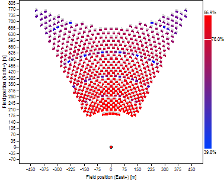
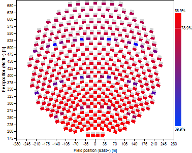
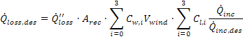
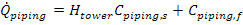
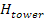
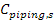
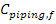

The Receiver Template page allows you to specify geometry and properties of a receiver. Each receiver in the layout has a unique Receiver Template page with a name corresponding to that specified in the Receiver Template Management page.
The height of the receiver heat absorption surface.
The azimuthal orientation of the receiver. North=0, East=90, West=270.
** Currently, this is only implemented for Flat Plate receivers.
The elevation orientation of the receiver. The normal vector from the plane of the receiver surface is tilted at this elevation angle.
** Currently, this is only implemented for Flat Plate receivers.
Select the receiver type to be "external cylindrical". The heat absorbing surface is defined as a cylinder of specified diameter and height. The centerline axis of the receiver is oriented at zenith.
The diameter of the receiver cylinder.
Select the receiver type to be "flat plate". The heat absorbing surface lies within a flat plane with a surface normal vector pointing toward the horizon at due North unless otherwise specified.
You can limit the angular window from which the receiver can accept incoming flux. The angular limits effectively block reflected light from heliostats outside of the range.
The shape of the angular window can be either rectangular or elliptical.
Rectangular limits indicate that the receiver can accept reflected light from a rectangular profile when viewed from the perspective of the receiver. Because the limits are imposed from the perspective of the receiver, the rectangular acceptance range may be distorted when projected onto the plane of the ground.
The following layout provides an example of rectangular constraints for a flat plate receiver at a Receiver orientation elevation of -30 degrees, a Receiver horizontal acceptance angle of 60 degrees, and a Receiver vertical acceptance angle of 30 degrees.

Elliptical limits indicate that the receiver can accept reflected light from an elliptical profile when viewed from the perspective of the receiver. The ellipse is defined by a maximum width and maximum height. The Receiver horizontal acceptance angle specifies the maximum width of the ellipse, while the Receiver vertical acceptance angle specifies the maximum height.
The following layout provides an example of elliptical constraints for a flat plate receiver at a Receiver orientation elevation of -30 degrees, a Receiver horizontal acceptance angle of 60 degrees, and a Receiver vertical acceptance angle of 30 degrees.

The angular extent in the horizontal direction from the perspective of the receiver from which incident light can be accepted. The angular span is symmetric about the normal vector from the surface of the receiver.
The angular extent in the vertical direction from the perspective of the receiver from which incident light can be accepted. The angular span is symmetric about the normal vector from the surface of the receiver.
Calculated value indicating the aspect ratio of the receiver. The aspect ratio is defined as the height of the receiver divided by the width, where the width is equal to the specified with for a flat plate receiver or the specified diameter for a cylindrical receiver.
The heat absorbing surface area of the receiver. For external cylindrical receivers, this is equal to the diameter times the height times Pi. For flat plate receivers, this is equal to the width times the height.
You can specify an offset in the receiver position relative to the tower position using these inputs. The receiver is by default positioned at the (x=0, y=0) location relative to the heliostat coordinates.
Offset the receiver position in the East-West direction. A positive X-offset indicates displacement to the East.
Offset the receiver position in the North-South direction. A positive Y-offset indicates displacement to the North.
Offset the receiver position in the vertical direction. A positive Z-offset indicates displacement upward.
Calculated value indicating the optical height of the receiver including the receiver Z axis offset. The optical height is defined as the distance between the heliostat pivot points and the vertical center of the receiver. See Tower Optical Height for more information.
The allowable peak flux is used only for optimization. This value specifies the maximum flux allowed at any point on the receiver surface. During optimization, if the allowable flux is exceeded, the algorithm may attempt to increase the receiver surface area.
The receiver thermal absorptance specifies the fraction of light that is absorbed (before radiative and convective losses) when striking the receiver. This value typically indicates the absorptivity of the receiver surface coating.
The receiver thermal losses include convective and radiative loss from the absorbing surface of the receiver and piping loss from the riser and downcomer. The thermal losses are estimated using a design-point value that you specify, the receiver absorptive area, and polynomials that scale the thermal losses with incident power level and wind velocity.
Thermal losses are used in two ways: First, the total thermal power delivered to the receiver must equal the specified Solar field design power on the Layout Setup page plus the design-point thermal loss plus the fractional loss due to the receiver thermal absorptance fraction. Therefore, the power delivered by the heliostats will typically exceed the specified Solar field design power.
You can set the baseline receiver thermal loss using this coefficient. The value indicates the losses from the receiver due to convection and radiation in kWt per square meter of receiver absorber area.
The load-based thermal loss adjustment allows you to specify how the thermal losses may vary with incident power on the receiver. The coefficients that you provide correspond to a 3rd-degree polynomial, where the argument is given by the power incident on the receiver at any particular time divided by the power on the receiver at the design point. The 0th order coefficient is a constant, the 1st order coefficient is a linear term, the 2nd order coefficient is a quadratic term, and the third order coefficient is a cubic term.
The thermal loss adjustments are used both to calculate the thermal loss at design and to calculate the thermal loss during the layout simulation when the DNI and heliostat field optical efficiency deviate from their reference conditions.
The wind-based thermal loss adjustment allows you to specify how the thermal losses may vary with measured wind speed from a weather file. The coefficients that you provide correspond to a constant (0), linear (1), quadratic (2), and cubic (3) term. The coefficients multiply the argument, which is wind velocity raised to the corresponding power.
The thermal loss adjustments are used both to calculate the thermal loss at design and to calculate the thermal loss during the layout simulation when the wind velocity deviates from the reference condition (zero).
The design-point thermal loss is the total rate of thermal loss due to radiation and convection at reference conditions. The design-point thermal loss is calculated as follows:

The terms in this equation are:
(1) Design point receiver thermal loss
(2) Receiver surface area
(3) Result of the wind-based thermal loss adjustment polynomial evaluation
(4) Result of the load-based thermal loss adjustment polynomial evaluation
The design-point thermal loss is added to the Solar field design power and the fractional loss due to imperfect absorption (if applicable) to determine the total required power to be delivered by the heliostat field at the reference condition.
The receiver piping loss coefficient determines the loss from the receiver piping in units of kWt per meter of tower height.
The receiver piping loss constant determines the thermal losses from receiver piping that is constant and does not depend on system geometry.
The receiver piping loss is a calculated value that indicates the total receiver piping loss, including constant loss and loss that scales with tower height. The receiver piping loss is calculated as follows:

where:
 |
m |
Tower height |
 |
kW/m |
Receiver piping loss coefficient |
 |
kW |
Receiver piping loss constant |